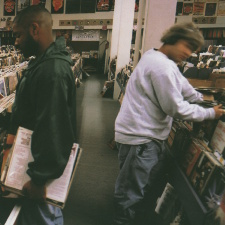

DJ Shadow - Endtroducing.....
8🡶
in the image of sound | 2025.05.20

culture has a funny cycle to it. beginning around 2007, amidst abysmal sales of the music format, vinyl records would have a new lease on life with rising popularity for the first time in decades [1]. a decade later, and Sony starts pressing records for the first time since 1989. fast forward to now, and vinyl records take up more space than CDs in Walmarts across America, with shelves full of whatever’s in the ever-quickening zeitgeist. and there’s certainly a particular je ne sais quoi to vinyl records that’s contributed to its strong resurgence! maybe the album covers are pretty to look at. maybe it’s the satisfaction that comes with holding music that you own. maybe it’s how methodical it is to pull up an album and listen to it from cover to cover; digging through the crates, pulling it out of its sleeve, setting up the turntable and waiting with bated breath as the arm descends onto the wax. it’s quite different and distinct from what streaming culture would have you–instant music anytime, anywhere at the press of a few buttons. vinyl poses a slower, simpler lifestyle in spite of that. and even though it probably wasn’t as romanticized in the late 90s, Josh Davis of ‘DJ Shadow’ fame certainly could sense it.
the liner notes to his 1996 debut Endtroducing certainly reflect this: “This album reflects a lifetime of vinyl culture.” [2] and it’s no fib! the cuts off of the record technically contain no original music, only Davis hunched over his Akai MPC, alternating between his studio and the Sacramento record store he practically lived in. what he weaves from the wax is, much like with vinyl, romanticized and hard to explain; Endtroducing, with its sheer variety in sampling, feels like an impossible ensemble of music. fragments of drum fills and melodies recombine from artists who would never meet, as if Davis is cueing them in across time and space through his MPC. it’s this recombinance, this impossible consance, that contributes to the spirituality of the album. tracks like “Building Steam With a Grain of Salt” employ somber piano keys against the backdrop of a rock drum beat and almost etheral choirs, and even though these are wildly differing samples; an obscure b-side from a jazz record sitting on a shelf since ‘78, some forgotten mediocre rock band whose members have gotten married or died, a well loved classical record, and who knows what else, it’s from this dissonance the elegance of this album comes forward. it is, after all, trying to synthesize a culture into just a few songs.
more often than not, Endtroducing dabbles into shades of solemnity, and at times this melodrama makes sense. it’s common for people to give their life to art only for their output to fade into obscurity, with the 99% coalescing into what used to be the basement of local record shops or forgotten casettes. in the murky, noise-filled interludes of this album, it reads as a eulogy for those who have tried and failed, an obituary for the third life in Sarah Russell’s poem [3]. and as barriers to entry for art continue to fall as time goes on, as intellectual property law falls in the face of Machine, the recombinance of this album will only grow more and more poignant.